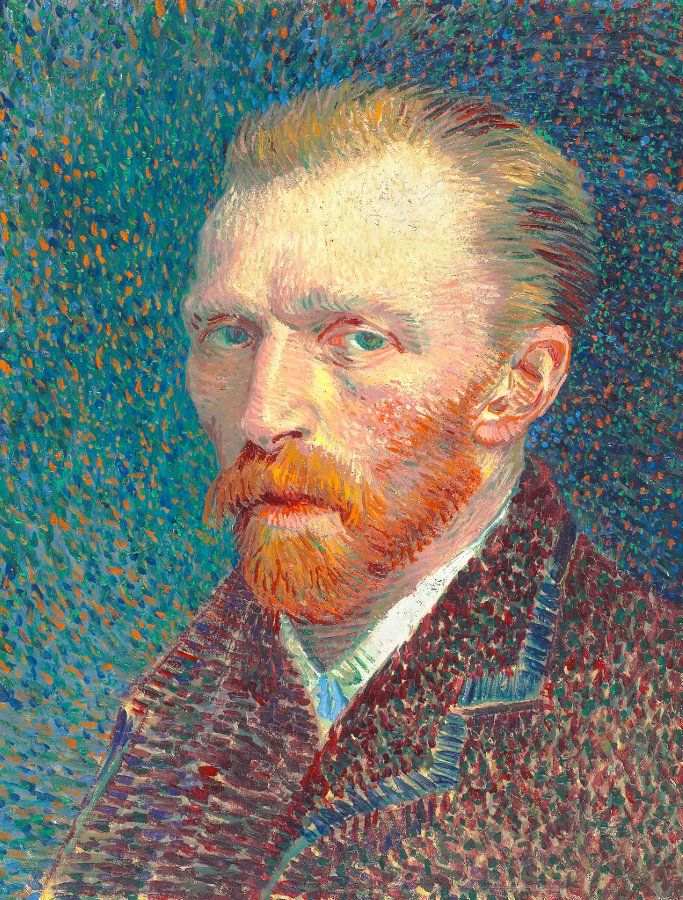
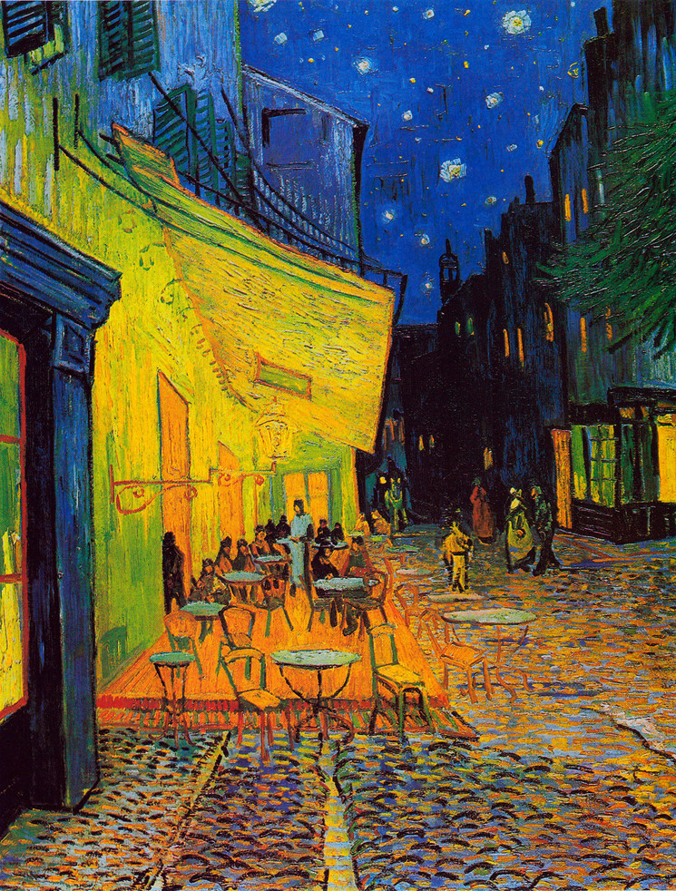
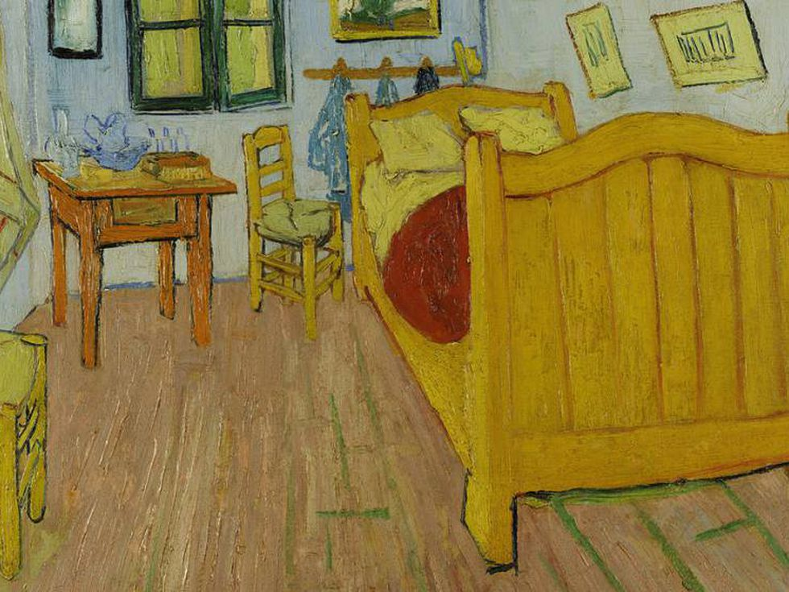
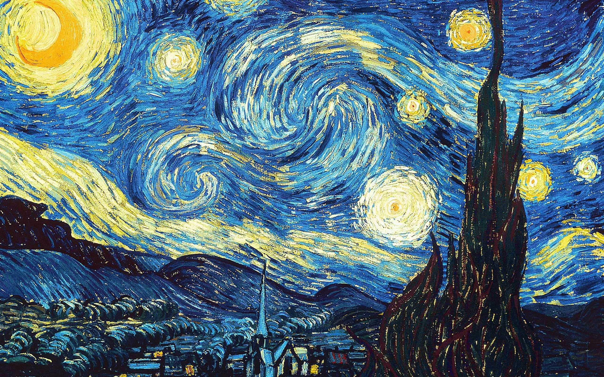

Vincent Van Gogh
One of the main exponents of Post-Impressionism

Van Gogh, the misunderstood painter
Van Gogh was born on March 30, 1853, in Groot-Zundert, Netherlands.
Van Gogh’s father, Theodorus van Gogh, was an austere country minister, and his mother, Anna Cornelia Carbentus, was a moody artist whose love of nature, drawing and watercolors
was transferred to her son.
At age 15, van Gogh's family was struggling financially, and he was forced to leave school and go to work. He got a job at his Uncle Cornelis' art dealership, Goupil & Cie., a firm of art dealers in The Hague. By this time, van Gogh was fluent in French, German and English, as well as his native Dutch. In June of 1873, van Gogh was transferred to the Groupil Gallery in London. There, he fell in love with English culture. He visited art galleries in his spare time, and also became a fan of the writings of Charles Dickens and George Eliot.
In the fall of 1880, van Gogh decided to move to Brussels and become an artist. Though he had no formal art training, his brother Theo offered to support van Gogh financially. He began taking lessons on his own, studying books like Travaux des champs by Jean-François Millet and Cours de dessin by Charles Bargue. Van Gogh's art helped him stay emotionally balanced. In 1885, he began work on what is considered to be his first masterpiece, "Potato Eaters." Theo, who by this time living in Paris, believed the painting would not be well-received in the French capital, where Impressionism had become the trend.



